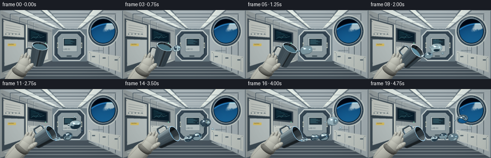
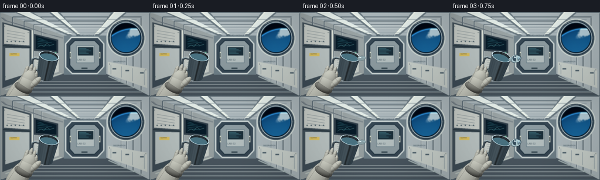

CODING AGENTS AS PIXEL WORLD MODELS
traex/GPT-6-Astra · phygen_001
点击播放 · 原生 RGB 像素
逐轮保存的候选
回放视频、检查图与代码变化。
每份候选均可单独播放。实际图片检查记录在下方工具轨迹中。
候选 01播放与检查图
点击播放 · 原生 RGB 像素


展开代码变化
--- 上一保存版本
+++ 本次保存版本
@@ -0,0 +1,375 @@
+"""Deterministic, purely procedural zero-gravity water study.
+Uses analytic surfaces, screen-space optical refraction, and hand-drawn habitat geometry.
+"""
+from pathlib import Path
+import math,json
+import numpy as np
+from PIL import Image, ImageDraw, ImageFont, ImageFilter
+from scipy.ndimage import gaussian_filter, map_coordinates
+import artifact_io
+
+ROOT=Path(__file__).resolve().parent
+SPEC=json.loads((ROOT/'task_spec.json').read_text())
+W,H=SPEC['width'],SPEC['height']; S=3; WS,HS=W*S,H*S
+rng=np.random.default_rng(422)
+Y,X=np.mgrid[0:HS,0:WS].astype(np.float32); X=(X+.5)/S;Y=(Y+.5)/S
+
+def norm(a):
+ return a/np.maximum(np.linalg.norm(a,axis=-1,keepdims=True),1e-8)
+def smooth(a,b,t):
+ q=np.clip((t-a)/(b-a),0,1);return q*q*(3-2*q)
+
+def background():
+ im=Image.new('RGB',(WS,HS),(95,109,117));d=ImageDraw.Draw(im)
+ def poly(p,c): d.polygon([(int(x*S),int(y*S)) for x,y in p],fill=c)
+ def line(p,c,w=1):d.line([(int(x*S),int(y*S)) for x,y in p],fill=c,width=max(1,int(w*S)),joint='curve')
+ def rect(box,c,outline=None,w=1):d.rectangle(tuple(int(v*S) for v in box),fill=c,outline=outline,width=max(1,int(w*S)))
+ def ellipse(box,c,outline=None,w=1):d.ellipse(tuple(int(v*S) for v in box),fill=c,outline=outline,width=max(1,int(w*S)))
+ def text(p,t,size=4,c=(60,74,84)):
+ try: f=ImageFont.truetype('/usr/share/fonts/truetype/dejavu/DejaVuSans.ttf',int(size*S))
+ except OSError:f=ImageFont.load_default()
+ d.text((int(p[0]*S),int(p[1]*S)),t,fill=c,font=f)
+ # Four walls receding into a compact pressurized laboratory module.
+ poly([(0,0),(256,0),(180,40),(109,40)],(168,179,183))
+ poly([(0,0),(109,40),(109,105),(0,144)],(151,160,161))
+ poly([(256,0),(180,40),(180,105),(256,144)],(170,181,185))
+ poly([(0,144),(109,105),(180,105),(256,144)],(76,88,97))
+ rect((109,40,181,107),(111,127,135))
+ # Repeated structural rings / seals create physical depth.
+ for inset in [0,20,38,53,65]:
+ k=inset/100
+ p=[(0+109*k,0+40*k),(256-76*k,0+40*k),(256-76*k,144-39*k),(109*k,144-39*k),(109*k,40*k)]
+ line(p,(87,102,111),2.8*(1-k))
+ line([(x+1,y+1) for x,y in p],(202,209,208),.9)
+ # Ceiling panels and soft recessed LED strips.
+ for xa,xb in [(25,55),(83,102),(190,217)]:
+ end1=109+(xa/256)*71;end2=109+(xb/256)*71
+ poly([(xa,0),(xb,0),(end2,40),(end1,40)],(105,119,127))
+ poly([(xa+4,0),(xb-4,0),(end2-1,37),(end1+1,37)],(222,231,227))
+ line([(xa+6,0),(end1+1,37)],(245,248,234),1.1)
+ for yy in [12,26,35]:
+ left=yy*109/40;right=256-yy*76/40
+ line([(left,yy),(right,yy)],(130,144,151),.7)
+ # Left utility rack.
+ poly([(4,17),(53,30),(53,111),(4,130)],(66,80,89))
+ poly([(7,20),(50,32),(50,57),(7,54)],(193,198,193))
+ poly([(9,61),(50,62),(50,104),(9,117)],(182,191,190))
+ line([(5,57),(52,60)],(42,56,64),2)
+ for yy in [31,36,41,46]:
+ line([(12,yy),(42,yy+5)],(85,101,110),.7)
+ for x in [11,18,25,32,39]:
+ ellipse((x,49,x+2,51),(77,96,104))
+ # Monitor in a padded rack on the middle-left wall.
+ poly([(58,37),(99,47),(99,70),(58,66)],(53,66,76))
+ poly([(61,40),(96,49),(96,66),(61,63)],(12,31,43))
+ for j in range(5):
+ line([(64,44+j*3),(74+((j*7)%17),47+j*2.7)],(70,151,164),.55)
+ line([(64,60),(70,56),(75,59),(80,53),(85,57),(92,55)],(137,205,205),.55)
+ ellipse((94,68,96,70),(114,214,171))
+ poly([(58,76),(100,78),(100,102),(58,117)],(197,203,198))
+ for j in range(6):
+ line([(63,83+3.4*j),(94,83+2.3*j)],(110,125,130),.65)
+ line([(55,31),(55,115)],(221,225,214),2)
+ # Hatch, gaskets, latches, and rear working area.
+ outer=[(122,43),(167,43),(177,54),(177,93),(166,105),(123,105),(112,94),(112,54)]
+ poly(outer,(57,73,85));line(outer+[outer[0]],(203,212,211),2.4)
+ inner=[(128,48),(161,48),(170,57),(170,91),(161,100),(127,100),(119,91),(119,57)]
+ poly(inner,(139,153,158));line(inner+[inner[0]],(39,57,69),2)
+ rect((130,57,161,87),(178,189,189),(110,129,138),1)
+ rect((133,60,159,74),(30,49,60))
+ for j in range(5):rect((135,62+j*2,147+j%3*4,62.5+j*2),(77,136,150))
+ text((132,79),'LAB 02',4,(74,93,101))
+ for xx in [119,169]:
+ rect((xx,68,xx+2,79),(211,215,200));rect((xx+.5,70,xx+1.5,77),(69,83,88))
+ rect((139,95,149,97),(59,76,84))
+ text((130,38),'RESEARCH MODULE',3,(53,70,81))
+ # Right-side service panels around the Earth-facing window.
+ poly([(184,85),(251,97),(251,130),(184,106)],(197,204,199))
+ for xx in [189,207,226,246]:
+ line([(xx,90+(xx-189)*.17),(xx,106+(xx-189)*.33)],(124,141,149),.7)
+ for xx in [192,214,239]:
+ rect((xx,96+(xx-192)*.15,xx+6,98+(xx-192)*.15),(82,99,109))
+ # Porthole, substantial machined surround.
+ ellipse((182,11,248,77),(68,85,97),(207,216,211),2)
+ ellipse((186,15,244,73),(156,173,182),(35,54,68),1.5)
+ ellipse((190,19,240,69),(7,20,33))
+ # Earth limb and clouds, computed only inside the actual glass.
+ ar=np.asarray(im).astype(np.float32).copy()
+ m=((X-215)/24.7)**2+((Y-44)/24.7)**2<=1
+ ex=(X-228);ey=(Y-91);rr=np.sqrt(ex**2+ey**2);r=63
+ earth=rr<r
+ noise=np.zeros((HS,WS),np.float32)
+ for sigma,weight in [(22,0.5),(9,.3),(3,.13),(1,.07)]:
+ n=gaussian_filter(rng.normal(size=(HS,WS)).astype(np.float32),sigma*S)
+ noise+=weight*n/max(n.std(),1e-6)
+ mu=np.sqrt(np.maximum(0,1-(rr/r)**2))
+ blue=np.stack([13+15*mu,61+45*mu,107+52*mu],axis=-1)
+ land=smooth(.15,.7,noise+.35*np.sin(X*.09+Y*.05))*earth
+ blue=blue*(1-.36*land[...,None])+np.array([30,68,70])*.36*land[...,None]
+ cloud=smooth(.35,1.1,noise+.6*np.sin(X*.095+Y*.15))*.88
+ blue=blue*(1-cloud[...,None])+np.array([199,218,225])*cloud[...,None]
+ atmosphere=np.exp(-((rr-r)/1.3)**2)
+ space=np.zeros_like(blue)+np.array([4,12,23])
+ color=np.where(earth[...,None],blue,space)+atmosphere[...,None]*np.array([37,97,135])
+ ar[m]=color[m]
+ im=Image.fromarray(np.uint8(np.clip(ar,0,255)));d=ImageDraw.Draw(im)
+ ellipse((189,18,241,70),None,(14,35,50),1.2)
+ # Highlights and captive screws in the window frame.
+ for a in np.linspace(0,2*np.pi,10,endpoint=False):
+ xx=215+29*np.cos(a);yy=44+29*np.sin(a)
+ ellipse((xx-1,yy-1,xx+1,yy+1),(49,69,81));line([(xx-.5,yy),(xx+.5,yy)],(195,207,210),.4)
+ line([(196,20),(205,16),(220,15)],(226,234,230),.85)
+ # Small safety placards, straps, handrails and fasteners.
+ text((193,83),'OBSERVATION',3,(68,89,98))
+ rect((16,70,33,75),(215,190,98));text((18,70),'CAUTION',2.5,(70,62,44))
+ for p in [(8,24),(48,35),(9,111),(49,103),(62,78),(97,80),(187,89),(249,99)]:
+ ellipse((p[0]-.65,p[1]-.65,p[0]+.65,p[1]+.65),(61,77,86))
+ line([(9,133),(105,105)],(173,185,183),2.3)
+ line([(10,132),(104,105)],(227,228,209),.7)
+ line([(185,110),(248,137)],(162,175,176),2)
+ # Bundled utility cables.
+ for offset in range(3):
+ pts=[(2+offset*1.5,9),(8+offset*1.5,14),(42+offset*1.5,24),(76+offset,36),(107,43+offset)]
+ line(pts,(88+offset*12,101+offset*10,110+offset*10),.8)
+ ar=np.asarray(im).astype(np.float32)
+ lighting=0.92+.1*np.exp(-((X-110)**2+(Y-5)**2)/19000)
+ tex=gaussian_filter(rng.normal(size=(HS,WS)),.5)*.65
+ ar=ar*lighting[...,None]+tex[...,None]
+ return np.asarray(Image.fromarray(np.uint8(np.clip(ar,0,255))).filter(ImageFilter.GaussianBlur(.43*S))).astype(np.float32)
+
+BG=background()
+# A reflective environment representing the station's white ceiling panels and dark racks.
+def env(R):
+ rx,ry,rz=R[...,0],R[...,1],R[...,2]
+ c=np.zeros(R.shape,np.float32)+np.array([.20,.255,.29],np.float32)
+ upper=smooth(.05,.75,-ry)
+ c+=upper[...,None]*np.array([.39,.41,.40])
+ front=smooth(-.2,.7,rz)
+ c+=front[...,None]*np.array([.075,.08,.08])
+ strip=np.exp(-((rx+.44)/.09)**4)*smooth(-.4,.0,-ry)*(.45+.55*front)
+ c+=strip[...,None]*np.array([.77,.76,.67])
+ strip2=np.exp(-((rx-.55)/.085)**4)*smooth(.2,.65,-ry)
+ c+=strip2[...,None]*np.array([.4,.47,.5])
+ window=np.exp(-((rx-.78)/.29)**2-((ry+.24)/.45)**2)
+ c+=window[...,None]*np.array([.10,.23,.34])
+ dark=np.exp(-((rx-.02)/.16)**4)*smooth(-.6,.7,ry)
+ c*=1-.56*dark[...,None]
+ return c
+L=norm(np.array([-.45,-.68,.8],np.float32))
+L2=norm(np.array([.8,-.25,.65],np.float32))
+
+def pose(t):
+ e=float(smooth(0,3.2,t));theta=np.deg2rad(12+49*e)
+ a=np.array([.875*np.sin(theta),-.875*np.cos(theta),math.sqrt(1-.875**2)],np.float32)
+ u=np.array([np.cos(theta),np.sin(theta),0],np.float32)
+ B=np.array([76.,111.,0.],np.float32)
+ return B,a,u,e
+
+def lip(t):
+ B,a,u,e=pose(t)
+ return (B+42*a+15.5*u)[:2]
+
+# Geometry renderer with a proper depth buffer for the cup, handle and glove.
+def foreground(t,bg):
+ out=bg.copy();Z=np.full((HS,WS),-1e5,np.float32)
+ N=np.zeros((HS,WS,3),np.float32);MAT=np.zeros((HS,WS),np.int8)
+ U=np.zeros((HS,WS),np.float32);V=U.copy()
+ def put(z,n,valid,mat,uu=0,vv=0):
+ mask=valid&(z>Z)
+ Z[mask]=z[mask];N[mask]=n[mask] if np.ndim(n)==3 else n;MAT[mask]=mat
+ U[mask]=uu[mask] if np.ndim(uu)==2 else uu;V[mask]=vv[mask] if np.ndim(vv)==2 else vv
+ B,a,u,e=pose(t)
+ def cone(r0,r1,h0,h1,inner=False):
+ k=(r1-r0)/(h1-h0);rbase=r0-k*h0
+ dx=X-B[0];dy=Y-B[1];sxy=a[0]*dx+a[1]*dy;q=1+k*k
+ aa=1-q*a[2]*a[2];bb=-2*q*sxy*a[2]-2*rbase*k*a[2]
+ cc=dx*dx+dy*dy-q*sxy*sxy-2*rbase*k*sxy-rbase*rbase
+ disc=bb*bb-4*aa*cc
+ for sign in [-1,1]:
+ zz=(-bb+sign*np.sqrt(np.maximum(disc,0)))/(2*aa);ss=sxy+a[2]*zz
+ p=np.stack([dx,dy,zz],axis=-1);r=rbase+k*ss
+ nn=norm(p-a[None,None,:]*(ss+k*r)[...,None]);nn=nn*(-1 if inner else 1)
+ put(zz+B[2],nn,(disc>=0)&(ss>=h0)&(ss<=h1),2 if inner else 1,ss,np.arctan2(np.sum(p*u,axis=-1),zz-ss*a[2]))
+ def cap(s,rmin,rmax,mat):
+ zz=(s-a[0]*(X-B[0])-a[1]*(Y-B[1]))/a[2]
+ rr=(X-B[0])**2+(Y-B[1])**2+zz*zz-s*s
+ put(zz+B[2],a,(rr>=rmin*rmin)&(rr<=rmax*rmax),mat,s)
+ def ellipsoid(c,r,ang,mat):
+ # Rotated ellipsoid, analytic front intersection and exact normals.
+ ca,sa=np.cos(ang),np.sin(ang)
+ dx=X-c[0];dy=Y-c[1]
+ xx=ca*dx+sa*dy;yy=-sa*dx+ca*dy
+ q=1-(xx/r[0])**2-(yy/r[1])**2
+ zz=np.sqrt(np.maximum(q,0))*r[2]
+ nx=xx/(r[0]**2);ny=yy/(r[1]**2)
+ nn=norm(np.stack([ca*nx-sa*ny,sa*nx+ca*ny,zz/r[2]**2],axis=-1))
+ put(zz+c[2],nn,q>=0,mat,yy,xx)
+ def tube(p0,p1,r,mat=1):
+ v=p1-p0;length=np.linalg.norm(v);v=v/length
+ # Finite cylinder along v with hemispherical ends.
+ dx=X-p0[0];dy=Y-p0[1];sxy=v[0]*dx+v[1]*dy
+ aa=1-v[2]**2;bb=-2*sxy*v[2];cc=dx*dx+dy*dy-sxy*sxy-r*r
+ dis=bb*bb-4*aa*cc
+ z=(-bb+np.sqrt(np.maximum(dis,0)))/(2*aa);ss=sxy+z*v[2]
+ nn=norm(np.stack([dx-ss*v[0],dy-ss*v[1],z-ss*v[2]],axis=-1))
+ put(z+p0[2],nn,(dis>=0)&(ss>=0)&(ss<=length),mat,ss)
+ for p in [p0,p1]:ellipsoid(p,(r,r,r),0,mat)
+ # Rigid, rolled stainless-steel handle on the far side.
+ points=[]
+ for ss,uu in [(10,-13),(10,-22),(12,-26),(29,-26),(32,-23),(32,-16)]:
+ points.append(B+a*ss+u*uu+np.array([0,0,-2]))
+ for p,q in zip(points[:-1],points[1:]):tube(p,q,1.8)
+ cone(13.8,17.1,0,42);cone(12.6,15.85,2,42,True)
+ cap(0,0,13.8,1);cap(2,0,12.6,2);cap(42,15.8,17.1,3)
+ # Water retained by wetting inside the cup, lowering as liquid is released.
+ cap(37.8-11.5*smooth(.35,4.3,t),0,15.8,4)
+ # Hand / padded cuff. Palm and individual finger geometry are in front of the handle.
+ ca=np.array([48+8*e,116-3*e,26.],np.float32)
+ ga=.42+.16*e
+ def handpos(xx,yy,zz=0):
+ return ca+np.array([np.cos(ga)*xx-np.sin(ga)*yy,np.sin(ga)*xx+np.cos(ga)*yy,zz])
+ # Fabric-covered forearm disappears naturally off the bottom-left of frame.
+ ellipsoid(handpos(-6,30,-4),(17,34,10),ga+.16,5)
+ ellipsoid(handpos(-2,16,0),(16,9,11),ga,6)
+ ellipsoid(handpos(0,7,1),(14.5,17,10),ga,5)
+ ellipsoid(handpos(0,-2,1),(13,16,9),ga,5)
+ for xx,yy,ry in [(-9,-12,10),(-3,-16,12),(3.5,-15,11),(9,-10,9)]:
+ ellipsoid(handpos(xx,yy,0),(3.8,ry,5.3),ga-.13,7)
+ ellipsoid(handpos(13,-1,6),(5.4,13,6),ga+.4,7)
+ # Physically inspired material response: brushed metal vs diffuse woven glove.
+ valid=MAT>0
+ refl=2*N*N[...,2,None]-np.array([0,0,1],np.float32)
+ er=env(refl)
+ ndl=np.maximum(np.sum(N*L,axis=-1),0);nd2=np.maximum(np.sum(N*L2,axis=-1),0)
+ metal=er*205+np.array([29,32,33])*(.3+.7*ndl[...,None])
+ brush=(np.sin(U*47)+.6*np.sin(U*137)+.4*np.sin(U*261))*.7
+ metal+=brush[...,None]
+ metal*=1-.035*np.sin(V*21)[...,None]
+ metal[MAT==2]*=.61
+ metal[MAT==3]=np.clip(metal[MAT==3]*1.3+22,0,255)
+ out[valid]=metal[valid]
+ water=MAT==4
+ if np.any(water):
+ wc=np.array([33,70,84])*(.72+.22*ndl[...,None])+er*77
+ out[water]=wc[water]
+ cloth=MAT>=5
+ # Fabric grain remains attached to the moving hand.
+ weave=(np.sin(U*18)*np.sin(V*25)+np.sin(U*41+V*3)*.35)*1.4
+ shade=.38+.47*ndl+.13*nd2
+ fabric=np.array([225,227,215])*shade[...,None]+weave[...,None]
+ seam=np.exp(-((np.abs(V)-11.7)/.45)**2)*.16
+ fabric*=1-seam[...,None]
+ joints=(np.exp(-((U+4)/.65)**2)+np.exp(-((U-4.5)/.6)**2))*.13
+ ff=MAT==7;fabric[ff]*=(1-joints[ff,None])
+ cuff=MAT==6;fabric[cuff]*=.68
+ out[cloth]=fabric[cloth]
+ return np.clip(out,0,255)
+
+# Water is a sum of smoothly joined 3-D Gaussian metaballs; no downward acceleration.
+def water_shapes(t):
+ balls=[]
+ births=[.30,1.40,2.50,3.63]
+ radii=[10.3,9.0,7.4,6.5]
+ vel=[(20,-6.0),(18,1.0),(16,-4.7),(15,-.8)]
+ for j,(birth,r,(vx,vy)) in enumerate(zip(births,radii,vel)):
+ age=t-birth
+ if age<0:continue
+ release=birth+.96
+ g=min(age/.96,1.)
+ if t<=release:
+ anchor=lip(t)
+ direction=np.array([1.,-.14])
+ center=anchor+direction*(2+18*g)
+ rr=r*(.18+.82*np.sin(g*np.pi/2))
+ # A narrowing, continuous bridge feeds a swelling free end.
+ for k in range(6):
+ f=k/6
+ p=anchor+(center-anchor)*f
+ neck=(2.1+1.3*np.sin(f*np.pi))*(1-.56*smooth(.67,1,g)*np.sin(f*np.pi))
+ if k==0:neck=2.7
+ balls.append((p[0],p[1],neck,neck*.91,neck))
+ else:
+ drift=t-release
+ center=lip(release)+np.array([20.,-2.8])+np.array([vx,vy])*drift
+ rr=r
+ # Oscillations damp rather than changing into a gravity-driven stream.
+ g=1
+ if drift>.17:
+ p=center-np.array([13+1.4*j,2-j*3])+np.array([-1.0,1.4])*drift
+ rs=1.8 if j<2 else 1.35
+ balls.append((p[0],p[1],rs*1.1,rs,rs))
+ if j==0 and drift>.65:
+ p=center+np.array([12,11])+np.array([1.5,1])*drift
+ balls.append((p[0],p[1],2.7,2.5,2.55))
+ p=center+np.array([-3,-16])+np.array([1.,-.4])*drift
+ balls.append((p[0],p[1],1.55,1.6,1.55))
+ osc=.105*np.sin(age*8+j)*np.exp(-max(0,age-.96)*.7)
+ balls.append((center[0],center[1],rr*(1.10+osc),rr*(.91-osc*.55),rr*.91))
+ # Gentle lobes on the larger boluses, gradually relaxing under surface tension.
+ lob=.50*np.exp(-max(0,age-.96)*.53)
+ if rr>3:
+ balls.append((center[0]-rr*.58,center[1]+rr*.21,rr*.5,rr*(.53+lob*.24),rr*.49))
+ balls.append((center[0]+rr*.55,center[1]-rr*.22,rr*.48,rr*.51,rr*.48))
+ return balls
+
+def water_render(t,bg):
+ balls=water_shapes(t)
+ if not balls:return bg
+ # Cropping gives subpixel ray intersections without wasting work on empty cabin.
+ x0=max(0,int(min(b[0]-b[2]*1.55 for b in balls)*S));x1=min(WS,int(max(b[0]+b[2]*1.55 for b in balls)*S)+2)
+ y0=max(0,int(min(b[1]-b[3]*1.55 for b in balls)*S));y1=min(HS,int(max(b[1]+b[3]*1.55 for b in balls)*S)+2)
+ xx=X[y0:y1,x0:x1];yy=Y[y0:y1,x0:x1]
+ b=np.asarray(balls,dtype=np.float32)
+ fields=np.exp(2*(1-((xx[None]-b[:,0,None,None])/b[:,2,None,None])**2-((yy[None]-b[:,1,None,None])/b[:,3,None,None])**2))
+ invr=2/b[:,4,None,None]**2
+ f0=fields.sum(axis=0);mask=f0>=1
+ lo=np.zeros(xx.shape,np.float32);hi=np.zeros_like(lo)+max(b[:,4])*1.6
+ for _ in range(14):
+ mid=(lo+hi)*.5
+ val=np.sum(fields*np.exp(-invr*mid[None]**2),axis=0)
+ lo=np.where(val>1,mid,lo);hi=np.where(val>1,hi,mid)
+ zz=(lo+hi)*.5
+ wt=fields*np.exp(-invr*zz[None]**2)
+ nx=np.sum(wt*(xx[None]-b[:,0,None,None])/b[:,2,None,None]**2,axis=0)
+ ny=np.sum(wt*(yy[None]-b[:,1,None,None])/b[:,3,None,None]**2,axis=0)
+ nz=np.sum(wt*zz[None]/b[:,4,None,None]**2,axis=0)
+ n=norm(np.stack([nx,ny,nz],axis=-1));nz=n[...,2]
+ # Thick water behaves as a strongly curved lens, distorting and inverting panels.
+ sx=np.clip((xx-n[...,0]*zz*2.9)*S,0,WS-1)
+ sy=np.clip((yy-n[...,1]*zz*2.9)*S,0,HS-1)
+ transmission=np.stack([map_coordinates(bg[...,k],[sy,sx],order=1,mode='nearest') for k in range(3)],axis=-1)
+ transmission=transmission*np.array([.90,.974,.996])+np.array([0,2,3])
+ refl=2*n*nz[...,None]-np.array([0,0,1],np.float32)
+ reflection=env(refl)*255
+ fresnel=.025+.975*(1-nz)**4
+ # Internal reflection produces a thin dark/cyan edge rather than an opaque blue blob.
+ edge=np.exp(-((nz-.23)/.14)**2)
+ transmission*=1-.24*edge[...,None]
+ col=transmission*(1-fresnel[...,None])+reflection*fresnel[...,None]
+ half=norm(L+np.array([0,0,1],np.float32));half2=norm(L2+np.array([0,0,1],np.float32))
+ sp=np.maximum(np.sum(n*half,axis=-1),0)**120
+ sp2=np.maximum(np.sum(n*half2,axis=-1),0)**200
+ broad=np.maximum(np.sum(n*half,axis=-1),0)**18
+ col+=sp[...,None]*np.array([210,221,227])+sp2[...,None]*np.array([119,164,194])+broad[...,None]*np.array([10,13,14])
+ # Rectangular ceiling panel reflected as a curved, brilliant streak.
+ stripe=np.exp(-((refl[...,0]+.46)/.095)**6)*np.exp(-((refl[...,1]+.59)/.31)**6)
+ col=col*(1-.64*stripe[...,None])+np.array([244,250,249])*.64*stripe[...,None]
+ out=bg.copy();crop=out[y0:y1,x0:x1];crop[mask]=np.clip(col[mask],0,255)
+ return out
+
+def main():
+ frames=[]
+ for i in range(SPEC['frames']):
+ t=i/SPEC['fps']
+ frame=foreground(t,BG)
+ frame=water_render(t,frame)
+ # Gentle photographic contrast, restrained vignette and consistent fine texture.
+ vig=1-.105*((X-130)**2/190**2+(Y-66)**2/130**2)
+ frame*=vig[...,None]
+ frame=np.clip((frame-118)*1.035+118,0,255)
+ im=Image.fromarray(frame.astype(np.uint8)).resize((W,H),Image.Resampling.LANCZOS)
+ frames.append(np.asarray(im).copy())
+ print(f'rendered {i+1}/{SPEC["frames"]}',flush=True)
+ artifact_io.save(np.stack(frames),ROOT)
+ print('Saved RGB video artifacts',flush=True)
+if __name__=='__main__':main()
可观测工具轨迹
实际执行的命令与返回图片。
命令 1exit 0
/bin/bash -lc "ls -la && cat prompt.txt && printf '\\n---RULES---\\n' && cat GENERATION_RULES.md && printf '\\n---SPEC---\\n' && cat task_spec.json"
命令 2exit 0
/bin/bash -lc "cat artifact_io.py && python - <<'PY' import importlib.util for x in ['numpy','PIL','scipy']: print(x,importlib.util.find_spec(x)) PY"
命令 3exit 0
/bin/bash -lc "cat > generate.py <<'PY'
\"\"\"Deterministic, purely procedural zero-gravity water study.
Uses analytic surfaces, screen-space optical refraction, and hand-drawn habitat geometry.
\"\"\"
from pathlib import Path
import math,json
import numpy as np
from PIL import Image, ImageDraw, ImageFont, ImageFilter
from scipy.ndimage import gaussian_filter, map_coordinates
import artifact_io
ROOT=Path(__file__).resolve().parent
SPEC=json.loads((ROOT/'task_spec.json').read_text())
W,H=SPEC['width'],SPEC['height']; S=3; WS,HS=W*S,H*S
rng=np.random.default_rng(422)
Y,X=np.mgrid[0:HS,0:WS].astype(np.float32); X=(X+.5)/S;Y=(Y+.5)/S
def norm(a):
return a/np.maximum(np.linalg.norm(a,axis=-1,keepdims=True),1e-8)
def smooth(a,b,t):
q=np.clip((t-a)/(b-a),0,1);return q*q*(3-2*q)
def background():
im=Image.new('RGB',(WS,HS),(95,109,117));d=ImageDraw.Draw(im)
def poly(p,c): d.polygon([(int(x*S),int(y*S)) for x,y in p],fill=c)
def line(p,c,w=1):d.line([(int(x*S),int(y*S)) for x,y in p],fill=c,width=max(1,int(w*S)),joint='curve')
def rect(box,c,outline=None,w=1):d.rectangle(tuple(int(v*S) for v in box),fill=c,outline=outline,width=max(1,int(w*S)))
def ellipse(box,c,outline=None,w=1):d.ellipse(tuple(int(v*S) for v in box),fill=c,outline=outline,width=max(1,int(w*S)))
def text(p,t,size=4,c=(60,74,84)):
try: f=ImageFont.truetype('/usr/share/fonts/truetype/dejavu/DejaVuSans.ttf',int(size*S))
except OSError:f=ImageFont.load_default()
d.text((int(p[0]*S),int(p[1]*S)),t,fill=c,font=f)
# Four walls receding into a compact pressurized laboratory module.
poly([(0,0),(256,0),(180,40),(109,40)],(168,179,183))
poly([(0,0),(109,40),(109,105),(0,144)],(151,160,161))
poly([(256,0),(180,40),(180,105),(256,144)],(170,181,185))
poly([(0,144),(109,105),(180,105),(256,144)],(76,88,97))
rect((109,40,181,107),(111,127,135))
# Repeated structural rings / seals create physical depth.
for inset in [0,20,38,53,65]:
k=inset/100
p=[(0+109*k,0+40*k),(256-76*k,0+40*k),(256-76*k,144-39*k),(109*k,144-39*k),(109*k,40*k)]
line(p,(87,102,111),2.8*(1-k))
line([(x+1,y+1) for x,y in p],(202,209,208),.9)
# Ceiling panels and soft recessed LED strips.
for xa,xb in [(25,55),(83,102),(190,217)]:
end1=109+(xa/256)*71;end2=109+(xb/256)*71
poly([(xa,0),(xb,0),(end2,40),(end1,40)],(105,119,127))
poly([(xa+4,0),(xb-4,0),(end2-1,37),(end1+1,37)],(222,231,227))
line([(xa+6,0),(end1+1,37)],(245,248,234),1.1)
for yy in [12,26,35]:
left=yy*109/40;right=256-yy*76/40
line([(left,yy),(right,yy)],(130,144,151),.7)
# Left utility rack.
poly([(4,17),(53,30),(53,111),(4,130)],(66,80,89))
poly([(7,20),(50,32),(50,57),(7,54)],(193,198,193))
poly([(9,61),(50,62),(50,104),(9,117)],(182,191,190))
line([(5,57),(52,60)],(42,56,64),2)
for yy in [31,36,41,46]:
line([(12,yy),(42,yy+5)],(85,101,110),.7)
for x in [11,18,25,32,39]:
ellipse((x,49,x+2,51),(77,96,104))
# Monitor in a padded rack on the middle-left wall.
poly([(58,37),(99,47),(99,70),(58,66)],(53,66,76))
poly([(61,40),(96,49),(96,66),(61,63)],(12,31,43))
for j in range(5):
line([(64,44+j*3),(74+((j*7)%17),47+j*2.7)],(70,151,164),.55)
line([(64,60),(70,56),(75,59),(80,53),(85,57),(92,55)],(137,205,205),.55)
ellipse((94,68,96,70),(114,214,171))
poly([(58,76),(100,78),(100,102),(58,117)],(197,203,198))
for j in range(6):
line([(63,83+3.4*j),(94,83+2.3*j)],(110,125,130),.65)
line([(55,31),(55,115)],(221,225,214),2)
# Hatch, gaskets, latches, and rear working area.
outer=[(122,43),(167,43),(177,54),(177,93),(166,105),(123,105),(112,94),(112,54)]
poly(outer,(57,73,85));line(outer+[outer[0]],(203,212,211),2.4)
inner=[(128,48),(161,48),(170,57),(170,91),(161,100),(127,100),(119,91),(119,57)]
poly(inner,(139,153,158));line(inner+[inner[0]],(39,57,69),2)
rect((130,57,161,87),(178,189,189),(110,129,138),1)
rect((133,60,159,74),(30,49,60))
for j in range(5):rect((135,62+j*2,147+j%3*4,62.5+j*2),(77,136,150))
text((132,79),'LAB 02',4,(74,93,101))
for xx in [119,169]:
rect((xx,68,xx+2,79),(211,215,200));rect((xx+.5,70,xx+1.5,77),(69,83,88))
rect((139,95,149,97),(59,76,84))
text((130,38),'RESEARCH MODULE',3,(53,70,81))
# Right-side service panels around the Earth-facing window.
poly([(184,85),(251,97),(251,130),(184,106)],(197,204,199))
for xx in [189,207,226,246]:
line([(xx,90+(xx-189)*.17),(xx,106+(xx-189)*.33)],(124,141,149),.7)
for xx in [192,214,239]:
rect((xx,96+(xx-192)*.15,xx+6,98+(xx-192)*.15),(82,99,109))
# Porthole, substantial machined surround.
ellipse((182,11,248,77),(68,85,97),(207,216,211),2)
ellipse((186,15,244,73),(156,173,182),(35,54,68),1.5)
ellipse((190,19,240,69),(7,20,33))
# Earth limb and clouds, computed only inside the actual glass.
ar=np.asarray(im).astype(np.float32).copy()
m=((X-215)/24.7)**2+((Y-44)/24.7)**2<=1
ex=(X-228);ey=(Y-91);rr=np.sqrt(ex**2+ey**2);r=63
earth=rr<r
noise=np.zeros((HS,WS),np.float32)
for sigma,weight in [(22,0.5),(9,.3),(3,.13),(1,.07)]:
n=gaussian_filter(rng.normal(size=(HS,WS)).astype(np.float32),sigma*S)
noise+=weight*n/max(n.std(),1e-6)
mu=np.sqrt(np.maximum(0,1-(rr/r)**2))
blue=np.stack([13+15*mu,61+45*mu,107+52*mu],axis=-1)
land=smooth(.15,.7,noise+.35*np.sin(X*.09+Y*.05))*earth
blue=blue*(1-.36*land[...,None])+np.array([30,68,70])*.36*land[...,None]
cloud=smooth(.35,1.1,noise+.6*np.sin(X*.095+Y*.15))*.88
blue=blue*(1-cloud[...,None])+np.array([199,218,225])*cloud[...,None]
atmosphere=np.exp(-((rr-r)/1.3)**2)
space=np.zeros_like(blue)+np.array([4,12,23])
color=np.where(earth[...,None],blue,space)+atmosphere[...,None]*np.array([37,97,135])
ar[m]=color[m]
im=Image.fromarray(np.uint8(np.clip(ar,0,255)));d=ImageDraw.Draw(im)
ellipse((189,18,241,70),None,(14,35,50),1.2)
# Highlights and captive screws in the window frame.
for a in np.linspace(0,2*np.pi,10,endpoint=False):
xx=215+29*np.cos(a);yy=44+29*np.sin(a)
ellipse((xx-1,yy-1,xx+1,yy+1),(49,69,81));line([(xx-.5,yy),(xx+.5,yy)],(195,207,210),.4)
line([(196,20),(205,16),(220,15)],(226,234,230),.85)
# Small safety placards, straps, handrails and fasteners.
text((193,83),'OBSERVATION',3,(68,89,98))
rect((16,70,33,75),(215,190,98));text((18,70),'CAUTION',2.5,(70,62,44))
for p in [(8,24),(48,35),(9,111),(49,103),(62,78),(97,80),(187,89),(249,99)]:
ellipse((p[0]-.65,p[1]-.65,p[0]+.65,p[1]+.65),(61,77,86))
line([(9,133),(105,105)],(173,185,183),2.3)
line([(10,132),(104,105)],(227,228,209),.7)
line([(185,110),(248,137)],(162,175,176),2)
# Bundled utility cables.
for offset in range(3):
pts=[(2+offset*1.5,9),(8+offset*1.5,14),(42+offset*1.5,24),(76+offset,36),(107,43+offset)]
line(pts,(88+offset*12,101+offset*10,110+offset*10),.8)
ar=np.asarray(im).astype(np.float32)
lighting=0.92+.1*np.exp(-((X-110)**2+(Y-5)**2)/19000)
tex=gaussian_filter(rng.normal(size=(HS,WS)),.5)*.65
ar=ar*lighting[...,None]+tex[...,None]
return np.asarray(Image.fromarray(np.uint8(np.clip(ar,0,255))).filter(ImageFilter.GaussianBlur(.43*S))).astype(np.float32)
BG=background()
# A reflective environment representing the station's white ceiling panels and dark racks.
def env(R):
rx,ry,rz=R[...,0],R[...,1],R[...,2]
c=np.zeros(R.shape,np.float32)+np.array([.20,.255,.29],np.float32)
upper=smooth(.05,.75,-ry)
c+=upper[...,None]*np.array([.39,.41,.40])
front=smooth(-.2,.7,rz)
c+=front[...,None]*np.array([.075,.08,.08])
strip=np.exp(-((rx+.44)/.09)**4)*smooth(-.4,.0,-ry)*(.45+.55*front)
c+=strip[...,None]*np.array([.77,.76,.67])
strip2=np.exp(-((rx-.55)/.085)**4)*smooth(.2,.65,-ry)
c+=strip2[...,None]*np.array([.4,.47,.5])
window=np.exp(-((rx-.78)/.29)**2-((ry+.24)/.45)**2)
c+=window[...,None]*np.array([.10,.23,.34])
dark=np.exp(-((rx-.02)/.16)**4)*smooth(-.6,.7,ry)
c*=1-.56*dark[...,None]
return c
L=norm(np.array([-.45,-.68,.8],np.float32))
L2=norm(np.array([.8,-.25,.65],np.float32))
def pose(t):
e=float(smooth(0,3.2,t));theta=np.deg2rad(12+49*e)
a=np.array([.875*np.sin(theta),-.875*np.cos(theta),math.sqrt(1-.875**2)],np.float32)
u=np.array([np.cos(theta),np.sin(theta),0],np.float32)
B=np.array([76.,111.,0.],np.float32)
return B,a,u,e
def lip(t):
B,a,u,e=pose(t)
return (B+42*a+15.5*u)[:2]
# Geometry renderer with a proper depth buffer for the cup, handle and glove.
def foreground(t,bg):
out=bg.copy();Z=np.full((HS,WS),-1e5,np.float32)
N=np.zeros((HS,WS,3),np.float32);MAT=np.zeros((HS,WS),np.int8)
U=np.zeros((HS,WS),np.float32);V=U.copy()
def put(z,n,valid,mat,uu=0,vv=0):
mask=valid&(z>Z)
Z[mask]=z[mask];N[mask]=n[mask] if np.ndim(n)==3 else n;MAT[mask]=mat
U[mask]=uu[mask] if np.ndim(uu)==2 else uu;V[mask]=vv[mask] if np.ndim(vv)==2 else vv
B,a,u,e=pose(t)
def cone(r0,r1,h0,h1,inner=False):
k=(r1-r0)/(h1-h0);rbase=r0-k*h0
dx=X-B[0];dy=Y-B[1];sxy=a[0]*dx+a[1]*dy;q=1+k*k
aa=1-q*a[2]*a[2];bb=-2*q*sxy*a[2]-2*rbase*k*a[2]
cc=dx*dx+dy*dy-q*sxy*sxy-2*rbase*k*sxy-rbase*rbase
disc=bb*bb-4*aa*cc
for sign in [-1,1]:
zz=(-bb+sign*np.sqrt(np.maximum(disc,0)))/(2*aa);ss=sxy+a[2]*zz
p=np.stack([dx,dy,zz],axis=-1);r=rbase+k*ss
nn=norm(p-a[None,None,:]*(ss+k*r)[...,None]);nn=nn*(-1 if inner else 1)
put(zz+B[2],nn,(disc>=0)&(ss>=h0)&(ss<=h1),2 if inner else 1,ss,np.arctan2(np.sum(p*u,axis=-1),zz-ss*a[2]))
def cap(s,rmin,rmax,mat):
zz=(s-a[0]*(X-B[0])-a[1]*(Y-B[1]))/a[2]
rr=(X-B[0])**2+(Y-B[1])**2+zz*zz-s*s
put(zz+B[2],a,(rr>=rmin*rmin)&(rr<=rmax*rmax),mat,s)
def ellipsoid(c,r,ang,mat):
# Rotated ellipsoid, analytic front intersection and exact normals.
ca,sa=np.cos(ang),np.sin(ang)
dx=X-c[0];dy=Y-c[1]
xx=ca*dx+sa*dy;yy=-sa*dx+ca*dy
q=1-(xx/r[0])**2-(yy/r[1])**2
zz=np.sqrt(np.maximum(q,0))*r[2]
nx=xx/(r[0]**2);ny=yy/(r[1]**2)
nn=norm(np.stack([ca*nx-sa*ny,sa*nx+ca*ny,zz/r[2]**2],axis=-1))
put(zz+c[2],nn,q>=0,mat,yy,xx)
def tube(p0,p1,r,mat=1):
v=p1-p0;length=np.linalg.norm(v);v=v/length
# Finite cylinder along v with hemispherical ends.
dx=X-p0[0];dy=Y-p0[1];sxy=v[0]*dx+v[1]*dy
aa=1-v[2]**2;bb=-2*sxy*v[2];cc=dx*dx+dy*dy-sxy*sxy-r*r
dis=bb*bb-4*aa*cc
z=(-bb+np.sqrt(np.maximum(dis,0)))/(2*aa);ss=sxy+z*v[2]
nn=norm(np.stack([dx-ss*v[0],dy-ss*v[1],z-ss*v[2]],axis=-1))
put(z+p0[2],nn,(dis>=0)&(ss>=0)&(ss<=length),mat,ss)
for p in [p0,p1]:ellipsoid(p,(r,r,r),0,mat)
# Rigid, rolled stainless-steel handle on the far side.
points=[]
for ss,uu in [(10,-13),(10,-22),(12,-26),(29,-26),(32,-23),(32,-16)]:
points.append(B+a*ss+u*uu+np.array([0,0,-2]))
for p,q in zip(points[:-1],points[1:]):tube(p,q,1.8)
cone(13.8,17.1,0,42);cone(12.6,15.85,2,42,True)
cap(0,0,13.8,1);cap(2,0,12.6,2);cap(42,15.8,17.1,3)
# Water retained by wetting inside the cup, lowering as liquid is released.
cap(37.8-11.5*smooth(.35,4.3,t),0,15.8,4)
# Hand / padded cuff. Palm and individual finger geometry are in front of the handle.
ca=np.array([48+8*e,116-3*e,26.],np.float32)
ga=.42+.16*e
def handpos(xx,yy,zz=0):
return ca+np.array([np.cos(ga)*xx-np.sin(ga)*yy,np.sin(ga)*xx+np.cos(ga)*yy,zz])
# Fabric-covered forearm disappears naturally off the bottom-left of frame.
ellipsoid(handpos(-6,30,-4),(17,34,10),ga+.16,5)
ellipsoid(handpos(-2,16,0),(16,9,11),ga,6)
ellipsoid(handpos(0,7,1),(14.5,17,10),ga,5)
ellipsoid(handpos(0,-2,1),(13,16,9),ga,5)
for xx,yy,ry in [(-9,-12,10),(-3,-16,12),(3.5,-15,11),(9,-10,9)]:
ellipsoid(handpos(xx,yy,0),(3.8,ry,5.3),ga-.13,7)
ellipsoid(handpos(13,-1,6),(5.4,13,6),ga+.4,7)
# Physically inspired material response: brushed metal vs diffuse woven glove.
valid=MAT>0
refl=2*N*N[...,2,None]-np.array([0,0,1],np.float32)
er=env(refl)
ndl=np.maximum(np.sum(N*L,axis=-1),0);nd2=np.maximum(np.sum(N*L2,axis=-1),0)
metal=er*205+np.array([29,32,33])*(.3+.7*ndl[...,None])
brush=(np.sin(U*47)+.6*np.sin(U*137)+.4*np.sin(U*261))*.7
metal+=brush[...,None]
metal*=1-.035*np.sin(V*21)[...,None]
metal[MAT==2]*=.61
metal[MAT==3]=np.clip(metal[MAT==3]*1.3+22,0,255)
out[valid]=metal[valid]
water=MAT==4
if np.any(water):
wc=np.array([33,70,84])*(.72+.22*ndl[...,None])+er*77
out[water]=wc[water]
cloth=MAT>=5
# Fabric grain remains attached to the moving hand.
weave=(np.sin(U*18)*np.sin(V*25)+np.sin(U*41+V*3)*.35)*1.4
shade=.38+.47*ndl+.13*nd2
fabric=np.array([225,227,215])*shade[...,None]+weave[...,None]
seam=np.exp(-((np.abs(V)-11.7)/.45)**2)*.16
fabric*=1-seam[...,None]
joints=(np.exp(-((U+4)/.65)**2)+np.exp(-((U-4.5)/.6)**2))*.13
ff=MAT==7;fabric[ff]*=(1-joints[ff,None])
cuff=MAT==6;fabric[cuff]*=.68
out[cloth]=fabric[cloth]
return np.clip(out,0,255)
# Water is a sum of smoothly joined 3-D Gaussian metaballs; no downward acceleration.
def water_shapes(t):
balls=[]
births=[.30,1.40,2.50,3.63]
radii=[10.3,9.0,7.4,6.5]
vel=[(20,-6.0),(18,1.0),(16,-4.7),(15,-.8)]
for j,(birth,r,(vx,vy)) in enumerate(zip(births,radii,vel)):
age=t-birth
if age<0:continue
release=birth+.96
g=min(age/.96,1.)
if t<=release:
anchor=lip(t)
direction=np.array([1.,-.14])
center=anchor+direction*(2+18*g)
rr=r*(.18+.82*np.sin(g*np.pi/2))
# A narrowing, continuous bridge feeds a swelling free end.
for k in range(6):
f=k/6
p=anchor+(center-anchor)*f
neck=(2.1+1.3*np.sin(f*np.pi))*(1-.56*smooth(.67,1,g)*np.sin(f*np.pi))
if k==0:neck=2.7
balls.append((p[0],p[1],neck,neck*.91,neck))
else:
drift=t-release
center=lip(release)+np.array([20.,-2.8])+np.array([vx,vy])*drift
rr=r
# Oscillations damp rather than changing into a gravity-driven stream.
g=1
if drift>.17:
p=center-np.array([13+1.4*j,2-j*3])+np.array([-1.0,1.4])*drift
rs=1.8 if j<2 else 1.35
balls.append((p[0],p[1],rs*1.1,rs,rs))
if j==0 and drift>.65:
p=center+np.array([12,11])+np.array([1.5,1])*drift
balls.append((p[0],p[1],2.7,2.5,2.55))
p=center+np.array([-3,-16])+np.array([1.,-.4])*drift
balls.append((p[0],p[1],1.55,1.6,1.55))
osc=.105*np.sin(age*8+j)*np.exp(-max(0,age-.96)*.7)
balls.append((center[0],center[1],rr*(1.10+osc),rr*(.91-osc*.55),rr*.91))
# Gentle lobes on the larger boluses, gradually relaxing under surface tension.
lob=.50*np.exp(-max(0,age-.96)*.53)
if rr>3:
balls.append((center[0]-rr*.58,center[1]+rr*.21,rr*.5,rr*(.53+lob*.24),rr*.49))
balls.append((center[0]+rr*.55,center[1]-rr*.22,rr*.48,rr*.51,rr*.48))
return balls
def water_render(t,bg):
balls=water_shapes(t)
if not balls:return bg
# Cropping gives subpixel ray intersections without wasting work on empty cabin.
x0=max(0,int(min(b[0]-b[2]*1.55 for b in balls)*S));x1=min(WS,int(max(b[0]+b[2]*1.55 for b in balls)*S)+2)
y0=max(0,int(min(b[1]-b[3]*1.55 for b in balls)*S));y1=min(HS,int(max(b[1]+b[3]*1.55 for b in balls)*S)+2)
xx=X[y0:y1,x0:x1];yy=Y[y0:y1,x0:x1]
b=np.asarray(balls,dtype=np.float32)
fields=np.exp(2*(1-((xx[None]-b[:,0,None,None])/b[:,2,None,None])**2-((yy[None]-b[:,1,None,None])/b[:,3,None,None])**2))
invr=2/b[:,4,None,None]**2
f0=fields.sum(axis=0);mask=f0>=1
lo=np.zeros(xx.shape,np.float32);hi=np.zeros_like(lo)+max(b[:,4])*1.6
for _ in range(14):
mid=(lo+hi)*.5
val=np.sum(fields*np.exp(-invr*mid[None]**2),axis=0)
lo=np.where(val>1,mid,lo);hi=np.where(val>1,hi,mid)
zz=(lo+hi)*.5
wt=fields*np.exp(-invr*zz[None]**2)
nx=np.sum(wt*(xx[None]-b[:,0,None,None])/b[:,2,None,None]**2,axis=0)
ny=np.sum(wt*(yy[None]-b[:,1,None,None])/b[:,3,None,None]**2,axis=0)
nz=np.sum(wt*zz[None]/b[:,4,None,None]**2,axis=0)
n=norm(np.stack([nx,ny,nz],axis=-1));nz=n[...,2]
# Thick water behaves as a strongly curved lens, distorting and inverting panels.
sx=np.clip((xx-n[...,0]*zz*2.9)*S,0,WS-1)
sy=np.clip((yy-n[...,1]*zz*2.9)*S,0,HS-1)
transmission=np.stack([map_coordinates(bg[...,k],[sy,sx],order=1,mode='nearest') for k in range(3)],axis=-1)
transmission=transmission*np.array([.90,.974,.996])+np.array([0,2,3])
refl=2*n*nz[...,None]-np.array([0,0,1],np.float32)
reflection=env(refl)*255
fresnel=.025+.975*(1-nz)**4
# Internal reflection produces a thin dark/cyan edge rather than an opaque blue blob.
edge=np.exp(-((nz-.23)/.14)**2)
transmission*=1-.24*edge[...,None]
col=transmission*(1-fresnel[...,None])+reflection*fresnel[...,None]
half=norm(L+np.array([0,0,1],np.float32));half2=norm(L2+np.array([0,0,1],np.float32))
sp=np.maximum(np.sum(n*half,axis=-1),0)**120
sp2=np.maximum(np.sum(n*half2,axis=-1),0)**200
broad=np.maximum(np.sum(n*half,axis=-1),0)**18
col+=sp[...,None]*np.array([210,221,227])+sp2[...,None]*np.array([119,164,194])+broad[...,None]*np.array([10,13,14])
# Rectangular ceiling panel reflected as a curved, brilliant streak.
stripe=np.exp(-((refl[...,0]+.46)/.095)**6)*np.exp(-((refl[...,1]+.59)/.31)**6)
col=col*(1-.64*stripe[...,None])+np.array([244,250,249])*.64*stripe[...,None]
out=bg.copy();crop=out[y0:y1,x0:x1];crop[mask]=np.clip(col[mask],0,255)
return out
def main():
frames=[]
for i in range(SPEC['frames']):
t=i/SPEC['fps']
frame=foreground(t,BG)
frame=water_render(t,frame)
# Gentle photographic contrast, restrained vignette and consistent fine texture.
vig=1-.105*((X-130)**2/190**2+(Y-66)**2/130**2)
frame*=vig[...,None]
frame=np.clip((frame-118)*1.035+118,0,255)
im=Image.fromarray(frame.astype(np.uint8)).resize((W,H),Image.Resampling.LANCZOS)
frames.append(np.asarray(im).copy())
print(f'rendered {i+1}/{SPEC[\"frames\"]}',flush=True)
artifact_io.save(np.stack(frames),ROOT)
print('Saved RGB video artifacts',flush=True)
if __name__=='__main__':main()
PY
python generate.py"命令 4exit 0
/bin/bash -lc "python - <<'PY'
from pathlib import Path
import numpy as np
from PIL import Image
p=Path('.')
a=np.load('pixels.npz')['pixels']
assert a.shape==(144,256,20)
assert len(list((p/'frames').glob('*.png')))==20
for f in sorted((p/'frames').glob('*.png')):
im=Image.open(f)
assert im.size==(256,144) and im.mode=='RGB'
print('Verified: 20 RGB frames, 256 Ã 144; packed tensor:',a.shape)
print('All expected artifacts:',all((p/f).is_file() for f in ['generate.py','pixels.npz','index.html','inspection.png','transition_check.png']))
PY
command -v ffmpeg || true"保存候选 1 份；完成命令 4 次；可验证图片返回 0 张。原始 API 响应与完整日志保留在本地。